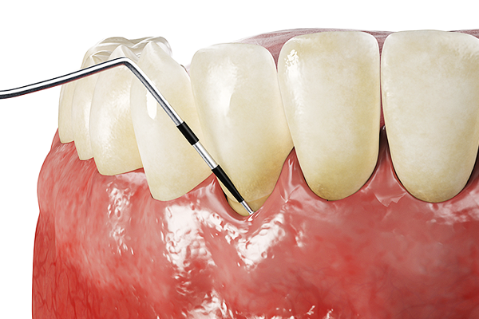

잇몸 건강 헤치는 치주질환
충치의 경우 보통 썩은 치아만을 치료함으로써 해결이 가능하지만, 흔히 ‘풍치’라고도 하는 치주질환은 그렇지 않습니다. 치아를 둘러싸고 있는 잇몸과 뼈에 생기는 염증성 질환으로 잇몸은 모든 치아의 기초가 되기 때문에 잇몸이 부실하게 되면 모든 치아가 위험에 처하게 됩니다.
치은염과 치주염의 차이
치주질환은 크게 치은염과 치주염 두 종류입니다. 치은염은 질환이 잇몸에만 있을 경우이고, 치주염은 치은염이 악화돼 염증이 치조골(치아를 받쳐주는 뼈) 에까지 확산된 것입니다. 평소 양치질을 할 때는 치태가 많이 쌓이는 잇몸과 치아가 만나는 부위를 잘 닦아 주는 것이 중요하다고 강조하는 이유는 바로 이 부분에 세균이 쌓일 확률이 많기 때문입니다
치주질환의 증상은
처음에는 눈에 띄는 증상이 없습니다. 그래서 정기적으로 치과를 방문해 조기에 질병을 찾아내는 것이 중요합니다.
- 잇몸이 붓고 욱신거림
- 치아 사이가 벌어지고 치아가 이동
- 치아와 잇몸 사이 치석 생성
- 잇몸에서 출혈
- 심해지면 잇몸에서 고름
- 충치가 없는데도 심한 입냄새
- 잇몸이 검붉은 색으로 변함